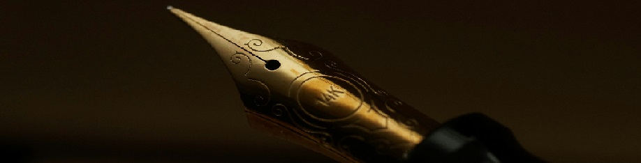

Sample - Once We Were: Chapter 2
(I would advise reading Chapter 1 before starting this chapter.)
Chapter 2: Underwater Thunderstorm
The sound of the small boat’s engine rang louder in Kaidan’s ears than the city-sized one inside Elysium-3 ever had. Not that it was truly louder, but when 27 years of someone’s life were spent hearing the same thing, one eventually becomes deaf to its continuous presence.
Yet, that was a minor thing when compared to the terrifying spectacle happening above his head. The upper atmosphere was a pure field of electricity that never seemed to expire, no matter how far into the horizon Kaidan would stare.
And stare at it he did, only averting his eyes when the combination of thunder and lightning struck together to make him cower like a child afraid of strange sounds in the night. Terrorizing was a term that couldn’t cover how much fear the phenomenon struck in him.
So this is it? This is what we came out to defeat, he thought with defiance, I can’t be afraid of it, but… How can I not? He felt small when finally perceiving he was no more than a dot underneath the limitless sky, whose end no eyes could see.
The boat slid through calm waters, cutting through it like a hot knife cuts butter. Under the hull, enormous search lights illuminated the depths of the sea with a brilliant cyan filter. While Dust could be found on the water's surface, the depths themselves were clear of it. For a reason Kaidan never understood, Dust failed to interact with water like it does with everything else, only occasionally reaching the depths after falling from the sky at high speed or sinking with a heavy object it had attached to. But no matter how it got down there, Dust would eventually resurface.
Everything feels so prevalent here, Kaidan thought as the boat rocked left and right, something Elysium-3 never did. Divided by the bridge at midship, the bow and the aft were large, mostly flat surfaces designed to carry supplies around and store fish in large compartments underneath the main deck.
The cargo covered most of the deck, creating a situation where everyone could almost hug one another, entertaining an illusion that the boat was far smaller than it actually was. Most of the cargo was composed of what Tom had prepared for their departure, boxes upon boxes secured through the flat bow segment right in front of the bridge’s cabin. The stern had a small crane attached to a cage almost as large as the back-end area, so terribly secured together that it blocked most of the stairs leading to the inside compartments.
“Are you feeling alright? You’re not looking up, where the spectacle is,” Kaidan approached Ayane. She stared at the ocean, standing by the portside rail right in front of the midship's door that led into the bridge.
“I’m fine, it’s just that the heat combined with the fish scent is making me a little dizzy,” Ayane replied. Considering it was nighttime, the warmth was unexpected. "And the sky… I’m terrified of it. It is loud in such a way that I can't hear my thoughts."
"Do you think the dome was a better sky than? It's certainly quiet." No sooner had Kaidan finished the sentence, Ayane nodded in disagreement.
"No, that fake ceiling was a prison." Ayane took her hands off the rail and brought them down to her waist, where her fingers began to tease the top of the glass case containing the flower. "I hope this will work. I want to set all of our—friends, free." She interrupted herself midsentence.
Friends is a difficult word, huh? I guess she never had any.
"It won’t be much longer until we know. We have a trip to the tower scheduled for tomorrow morning, so we are really close to testing Lance’s hypothesis on the field." Kaidan tried to reassure Ayane.
"It'll take at least two weeks till we can get a result from the flower's reaction, let alone the seeds—" Fuelled by some nervous thoughts, Ayane's sentence sped up with each word spoken, before coming to a sudden halt.
"I know the two of us only have one year left, but it's enough time," Kaidan softly told her.
"That isn’t the problem. I'm afraid of getting a negative result and having to go back..." Ayane had to hold her head tall for an instant as her thoughts appeared to take her strength away. "Years underwater, and the fish scent got to me just now," she complained, evading the topic.
“It could mean you're seasick,” said a young man who walked off the bridge carrying ginger in his hands. He was tall with a faint tan on his skin. His clothes matched the weather, full of open sections and ventilation, not only revealing his strong physique but also an intricate set of tribal tattoos around his body. “Eat some. If you’re seasick, you’ll get better.” He had a thick accent, which indicated that English wasn’t his first language, and one he didn’t speak very often, considering some sudden pauses present even in such short sentences.
“Thank you… Uroa wasn’t it?” Ayane asked as she accepted the ginger offer. “I think my friend Thomas will need some.” Ayane pointed to the boat’s bow, where Tom sat on the floor next to Dylan.
“Somehow, I feel like seasickness isn’t Tom’s problem,” Kaidan noted, finally feeling freed to use Thomas’s nickname whenever he wanted. It was unclear if Tom was upset, feeling seasick, or maybe both.
“I’ll get some for him,” Uroa said with a genuine smile, with facial features that spoke of a young man. Kaidan guessed he would be in his late teens, not unlike Tom and Dylan.
“Thanks for all the help, I appreciate it,” Kaidan told Uroa as he watched him leave. At the same time, a little boy, no older than 8 years old, walked off the bridge, startling Kaidan.
What would a boy so young be doing here at this time? Kaidan thought to himself.
It wasn’t as if he wasn’t aware of the boy’s presence, but seeing him around made Kaidan feel uncomfortable. Besides his group, the crew consisted of four other people: Uroa, the captain, the boy, and a quiet man wearing a diving suit.
That man had a strange aura surrounding him, partially for the complete refusal to engage with anyone and staying on a corner, but also for carrying a strange weapon that resembled the mixture of a crossbow with a harpoon gun. He had a ring on each of his fingers, which themselves were attached to one another by small rubber strings that went around his hands lto form the shape of a glove.
Synchronicity Rings? So is he a mercenary or bodyguard of sorts? Uroa mentioned that the waters weren’t safe at night.
“That is a beautiful flower, miss.” The mysterious little boy pointed at the flower Ayane carried inside the glass case. He had a coarse voice that was hard to hear, similar to what Kaidan expected to hear from someone with a sore throat.
“Do you like it?” Ayane asked the little boy, who nodded in response. “So, look at this.” Ayane took the case out of the hip belt where it was attached and brought it closer to the boy. Some stripes on her uniform emanated a cyan glow, which she used to illuminate the plant by approaching her forearm closer to it. The blue section of the petals came to life with a powerful dark blue hue.
The boy backed away. He bore an uncanny resemblance to Sean to the point that it was like seeing a ghost image of him: Same height, green eyes, dark, black hair cut short over a round face. The only difference was the energy: Where one was energetic, the other appeared to be sick—something enforced by how he focused on keeping his body tight and closed like someone on a winter night without any type of cloth to warm them.
“That is very nice, miss,” he slowly said, one word at a time, as he continued to back away.
“Are you alright?” Kaidan asked.
“Yes, sir,” the boy said in a monotone. “I am… not feeling well with the movement, that is all.”
“Keep your shit away from me!” Tom yelled. The little boy trembled for a second as everyone’s attention turned to the front of the boat, where Tom and Dylan were sitting. This time, Uroa was present, and so was a bunch of ginger splattered over the floor.
“I’m sorry,” said Uroa in his thick accent, “I just thought yo’ might be sick.”
“Me, sick?” Thomas replied with repugnance. “The only sick people around here–” Kaidan rushed to Tom’s side before he could finish the sentence, pulling him from the floor by his shoulders.
“Don’t say a single stupid word towards the people who are taking care of us.” Every single word Kaidan said held strength and impact.
“How can you side with them?” Tom questioned with wide eyes. “How?”
“Hey, brother, you’re gonna see–” Dylan tried to help.
“Don’t call me brother. We aren’t,” Tom shunned him away.
“But…” Dylan followed.
>“Anton! It is here!” Screamed the little boy, pointing at the water.
Why is everyone screaming? Kaidan thought.
The boat shook as it hit something.
“Kay, look at that!” Ayane pointed at the water right beside the midship. Submerged, a glowing magenta line moved like a snake circling a prey. At one end, where the head seemed to be, the single line spread into shapes resembling wings.
The man in the diving suit quickly exited the bridge. “Liam, stay in,” he said.
The boy ran inside without a complaint.
“Everyone, have your shields up!” Kaidan said as a faint blue glow surrounded him, an effect caused by a small disc on his jacket that manipulated the Dust in the air to form an incredibly thin shield. “Do you have your weapons at the ready?” He asked the others, who promptly had activated their own barrier. The barriers themselves weren’t awfully strong, but they should offer some defense against incoming impact.
“We can get a gun from the crate,” Dylan replied as Tom went ahead of him to get the equipment inside the crate for them. The first thing Tom found was a pistol, which he quickly handed over to Dylan.
Kaidan ran back to Ayane’s side. “Get into the bridge and stick with the kid.”
“When he said that the water was dangerous at night, I thought he meant a storm," Ayane said with confusion. "Have you ever heard of an infected water creature? The Dust can't merge with aquatic animals, right?” Ayanes spoke with curiosity, as if she were a scientist trying to connect the dots with data present solely in her head. “I thought–”
Then the boat got struck again, shaking slightly.
“Go in now!” Kaidan ordered Ayane.
“Okay.” Ayane moved into the bridge, leaving behind only Kaidan and Anton on the midship's deck.
“Were you expecting this?” Kaidan questioned Anton, looking at him from top to bottom, analyzing his convenient attire.
“Yes, I’m here to capture it, after all,” Anton replied. He had a strong, deep voice that instilled a sense of security. “Once I shoot it, bring down the cage!” He shouted to the captain.
“Go-Got it," the captain replied from the bridge. He was as young as Uroa, but skinnier and smaller, wearing a white hat that resembled a captain’s hat, but it wasn’t quite that.
A tail came onboard, colliding against the crates at the bow, just inches away from Tom and Dylan. The creature had some scales over a skin that had the texture of an eel.
Uroa attempted to leave the area, but the moving tail blocked his return to the bridge. He was now trapped at the bow with the two soldiers.
The animal continued to move its tail in a random pattern. Dylan and Thomas dodged out of the way, but since boxes couldn’t move, the ones unchained were thrown around, with a few falling into he ocean.
Dylan ducked and rolled to evade another strike from the animal’s tail. The constant impact made the boat rock, causing him to lose his footing and roll further than needed. The second Dylan recovered, he started to shoot at the moving tail, but to no avail, as none pierced its strange body.
“Bullets?” Anton questioned with a smile in the corner of his mouth. He appeared to be fascinated. “What are you, primitives? Out here, Rings—”
The tail wailed in every direction with no rhyme or reason, sending more cargo into the depths of the sea. Tom realized something and ran towards a long but thin, rectangular crate, dodging the rampant tail on the way. Once he had reached it, he clung to the metallic thing whose length was just slightly larger than his body length.
“I’ll set it up—” but as Tom said the words, the head of the beast flung over the ship’s stern. It moved so fast that it appeared to have flown over the boat, leaving only a blurred image in everyone’s mind.
“It grew…” was all that Kaidan could make out of Anton’s words as the beast jumped around the boat one more time. And then it jumped again, and again, and again, each time covering more of the ship with its body, wrapping around it like a coil.
Tom pressed a button on the crate's side. It opened it, and from the inside emerged a weapon similar to a sniper rifle filled with coils on its pipe that itself were surrounded by rings. It was immense, with the length of an adult human, containing four metal legs that sprang from the sides and were attached to the floor by a powerful magnetic force.
The animal’s weight trumped over the ship’s stability, which started to capsize the boat towards its port side, flipping it ninety degrees. Kaidan and Anton slid towards the rails. Without a single second of hesitation, Anton jumped in the water and vanished within its darkness. Kaidan, on the other hand, set his feet over the rails and used them to keep himself aboard the boat.
The kid! It was the first thought that crossed Kaidan’s mind, like an animal worried about their offspring. He moved close enough to the bridge’s entrance to see what had happened inside. yane had grabbed Liam as the two fell towards the bridge’s inner port wall, avoiding falling through the entrance door and into he ocean.
Noticing that the two were safe, he changed his attention to Tom, who had pulled Dylan next to him. The two held tight to the sniper gun affixed to the floor.
Uroa used the opportunity that the beast stopped moving and climbed the few crates that remained chained onboard. With the boat now sideways, they formed the closest thing resembling a floor.
“Ho-Hol’ on tight!” the captain said through the PA system, holding himself in place by not letting go of the helm. He pushed a lever on the panel and announced to all who could hear, “It will get shaky.”
The crane with the cage at the stern began to rise, creating a force in the opposite direction of the snake's body that had wrapped around it. In response, it tried to apply more pressure to it. Eventually, the cage broke, and the hook attached to it swung free, cutting through the creature’s skin.
Blood splashed everywhere as the beast’s body spasmed around, flailing at all the objects on its way. The boat trembled as it returned to its original position, but the monster didn’t fully let go of it.
The tail smacked Dylan, sending him flying inside the bridge’s cabin through the front observation window. Kaidan ran through the shaking boat, pulling the knife Ratgers gave him out of its case.
The stronger Kaidan pressed the handle, the more the ring located at the knife’s bolster vibrated. The Dust in the air that surrounded the knife was pulled towards it, making it change colors in the process. The glow of a faint green to yellow hue took form around the blade’s silhouette, growing stronger the more pressure Kaidan applied.
With the green blade’s edge, Kaidan delivered a single blow to the tail that successfully cut it. The entire beast instantly retracted into the water, letting go of the boat.
“Tom, ready the Maglev. If the blade worked, the Maglev should split the body in two,” Kaidan ordered as fast as he could. Tom didn’t think much, pressing a trigger atop the large weapon he had been holding on to.
While that happened, Kaidan approached the bridge’s window to check on Dylan.
“Are you ok?” A breathless Ayane asked Dylan inside the cabin.
“Yeah, I think...” Dylan replied, looking a little drowsy.
Now that the boat was stable and Dylan seemed safe, Kaidan patrolled the front of the ship, noticing that Uroa was nowhere to be found. “Uroa!” Kaidan shouted.
“I’m here!” he heard a reply coming from underneath some collapsed boxes whose chain had come free during the animal’s desperate flailing after the hook incident. Kaidan followed the voice, moving the crates out of the way.
But the strange animal wasn’t done with the boat. The bleeding tail came out of the water once again and hit Kaidan. The force of the impact made him let go of the knife as he felt his body being lifted from the ship and collide against the cold, ocean water. If it weren’t for the barrier, he’d have likely broken bones all over.
The pain caused by the sudden collision with the water was suppressed by the incoming fear created by the realization of how much nothingness existed underneath Kaidan’s body right now. He had lived his whole life at the bottom of the ocean, but Elysium-3 always offered a safe ground for his feet to stand upon. Now, he had nothing but his own swimming skills to keep him from being dragged into the abyss.
As Kaidan consciously held his breath, like in the myriad trainings he once had, a large object passed in front of his eyes that no training could prepare him for—an image that took his fear away from sinking into something else entirely.
The cyan light under the boat could produced enough light to see the marks where Dust had infected the animal. He saw the silhouette of the creature's true size, and it was immense on a scale he couldn’t describe. The head of the beast wasn’t like any fish he had ever seen. It had the flat surface of a snake’s head mixed with an eel's thin, slimy head. Strange anatenae’s like bones protruded from where the ears should be, forming the shape of wings around the face.
Unlike whatever happened above water, the underwater behaviour of the animal revealed a docile aspect. Something bright, with the shape of a vibrating orb, captured the monstrosity’s attention. Anton controlled the orb as he floated in front of the monster, his oxygen tank providing him with much-needed breath.
Kaidan perceived more: While the head was fixated on the strange orb, the body appeared to behave independently of the head, raising upwards on another attack aimed at the boat.
Kaidan started to run low on oxygen, bringing back the realization that he could be sinking. He looked up to the surface, realizing that he could reach it without much effort. He gave the first stroke upwards when something odd happened: Anton took the strange crossbow he was carrying and prepared to shoot… underwater? Kaidan could only guess.
The large cage fell from the boat and began its descent to the bottom of the ocean. Anton skimmed out of the way, but Kaidan didn’t have much time to pay attention to it, feeling his lungs reaching their limits. All he briefly saw was the cage smashing the creature’s head and breaking it out of the weird hypnosis.
Kaidan continued to move upwards with powerful strokes. The water moved with the strange animal, pulling him down with the formation of a current. He moved his arm the best way he could, trying to overpower the water flow.
Kaidan came out of the water, seeing the boat almost flipped on its side, lifted in the air so high it wasn’t touching the water. The cyan lights that once illuminated the depths now illuminated parts of the snake’s body that wrapped the boat. The magenta color it revealed was far brighter than any interaction between Dust and light he had ever seen. When the screaming thunder of the sky above decided to shine, it formed a canvas that painted a beautiful and horrifying scene.
The snake began to apply pressure on the boat, breaking it like an empty tin can smashed by a single hand. To prevent themselves from falling fromt he ship, Tom wound his legs around the guns’ legs to keep himself in position to fire, continuing to charge the weapon while Uroa grabbed Kaidan’s knife from the floor and pierced into a slit formed by a broken hatch on the ground. The green hue of the knife had long gone by now.
Tom continued to power up the Maglev rifle using energy created from the Dust that flowed around the coils under the vibrating rings.
The crane suddenly spun around from the stern and hooked into the bridge’s roof. All those who were inside it held against the wall, trying not to fall through the door into the ocean water—it would be a long fall considering the height the boat had been lifted.
Anton came out of the water right next to the boat, managed to grab onto the rail, and used it to climb back. That was when Kaidan noticed it: At some point, the creature started to pull the boat downwards in an attempt to sink it.
Tom had his finger on the trigger with the rifle perfectly aimed at the monster’s body. Considering its firepower, one shot and it would split it in half. Tom adjusted the aim slightly, readied the trigger, and…
Something similar to an arrow flew towards the soldier’s head. To dodge it, Tom let go of the weapon while pressing the trigger. He fell, hitting the boat’s rails with his back as the energized bullet flew through the air, leaving behind a trace of bright blue with a yellow tip.
Unfortunately, Tom’s fall made the gun shift position, and the bullet grazed the target. It was enough to deal some damage to the animal, which involuntarily released the boat.
The boat’s return trip to the water wasn’t as smooth. As the boat hit the surface, the crane broke, pulling the hook that had been attached to the bridge’s ceiling. The ceiling and back wall of the bridge were ripped off. Ayane ducked, holding the boy as close as possible to the floor as the slab of wall slid over their heads and collided against the port side wall.
Tom lost his balance, but Uroa grabbed him before he could fall off the boat.
“What were you thinking?” Tom screamed at Anton. Kaidan decided not to intervene. This time, it felt that it was justified, considering he almost died from a flying arrow shot by the man’s strange weapon.
“The creature is to be captured, not killed,” Anton replied. “You dying? I think I'd be doing your friends a favor. At any rate, I’d think those barriers of yours would be more powerful.”
The head of the snake came out of the water. The antanae-like structure had membranes between each bone that moved like a lung expanding and contracting. The beast looked around, searching for something on the boat like a predator. And soon it fixed its eyes on the now-open bridge.
Like a snake, it slowly approached the location with an enchanting dance. Dylan ran towards Ayane and stood there, between her and the giant animal. The captain pulled the crane’s lever, but there was no response; it wasn’t there any longer.
Kaidan swam as close as he could to the boat, but the rail was far too high for him to reach and return on board. “Get out of there!” He shouted, as if Ayana and Dylan would be able to do as he commanded.
Then, Liam grabbed the flower’s glass case from Ayane’s hip and threw it away, towards the exposed stern’s wall. The giant followed it, and with a simple bite, swallowed the whole thing in… accompanied by an arrow that perfectly timed its entrance together.
The animal stopped in motion as if reality itself had been paused.
Tom made a decision and ran to the rail gun, but Anton was faster and grabbed him, throwing the soldier to the floor.
“Are you trying to kill us?” Uroa complained to Anton, pointing the knife towards the antagonistic man.
“No! Just look at it for a couple more seconds,” Anton said.
Out of the blue, Electricity flowed through the creature’s skin. The monster contorted its body in despair as sparks emerged all around. It screamed in agony.
And then, it ceased to move, falling into the water with its eyes closed
“Is it dead?” Uroa wondered.
“No," Anton reploed. “Unfortunately, we don’t have another cage. Not that—”
A punch hit his face. “Next time, shoot an arrow at your head, idiot,” Tom angrily scorned Anton, who fell to the ground with the impact. Tom climbed over him and continued to punch him over and over.
The rings on Anton's fingers started to vibrate. The Dust that surrounded the two men initiated a shift to a different color, now visible to the naked eye even without direct exposure to cyan light. The first color it changed to was purple.
Ayane and Dylan pulled Kaidan out of the water. He didn’t take a second and ran towards Tom, pulling the boy away from him. The second color the Dust took was indigo, lasting less than a second before switching to green.
“Control yourself, you’re a soldier!” Kaidan reminded his subordinate.
Without a single word, Tom started to walk away from the scene. “Thank you for grabbing me,” was the only thing he said as he left, addressing Uroa without ever looking into his savior's eyes.
“Less than three hours out and we almost died,” Dylan expressed with a sigh of relief. “Guess I should’ve expected it.”
Ayane turned to Liam, who couldn’t stop staring at the strange animal’s body that floated by the boat. “Thank you for that, but…. How did you know that that thing would eat the flower?”
The boy didn’t answer; instead, he ran back to Anton’s side.
Kaidan remained silent, staring at the sky reflected on the water and the monster's body covering it. Something inside the bridge caught his attention back to the boat: The book Sean had given him remained intact, not a single drop of water or blood spilled over it. Somehow, it fell inside the bridge at some point and refused to leave.
What an irony that this didn’t fall off. I should get a way to have it with me at all times if possible.
Kaidan set his eyes back to the ocean, as if he could see where Sean was. Next to the rail, he saw Ayane lost in thought.
“You, ok?” Kaidan approached her. His body felt heavier than ever now that he had finally been hit with the loss of adrenaline.
“Yes, I’m just… thinking,” Ayane replied in exhaustion. “If the animals on the sea are getting infected, then we don’t have much time before all life begins to get closer to Threshold.” She clutched one of her hands and raised it over her chest; the other she brought to her pouch that remained attached to her belt. “Well, at least I still have the seeds, so that is a start.“ She lowered her head, “If I weren’t so useless…”
“Don’t be harsh with yourself,” Kaidan said. “You took care of the kid.”
“I’m just wondering if we’ll have enough time. If we don’t make it in one year, those two will pick up the mission in our stead, but… With the way Thomas is behaving… ”
Kaidan allowed Ayane’s words to sink in, realizing that success also relied on cultivating Tom and Dylan’s discipline.
The sky roared, accompanied by a flash of light.
In his twenty-seven years of existence, he had never seen such a spectacle. Despite being a clear night, no stars could be seen beyond the electrical field; not even the moon could be properly noticed. But something was there, Dust falling from above like shooting stars. They were as crisp and sharp as they could ever be, with no dome hiding them away or a sunset blurring the view.
And there, Kaidan made a wish, childish as the idea was.
Time will be granted for Ayane and I to complete this mission. That is all I ask for.